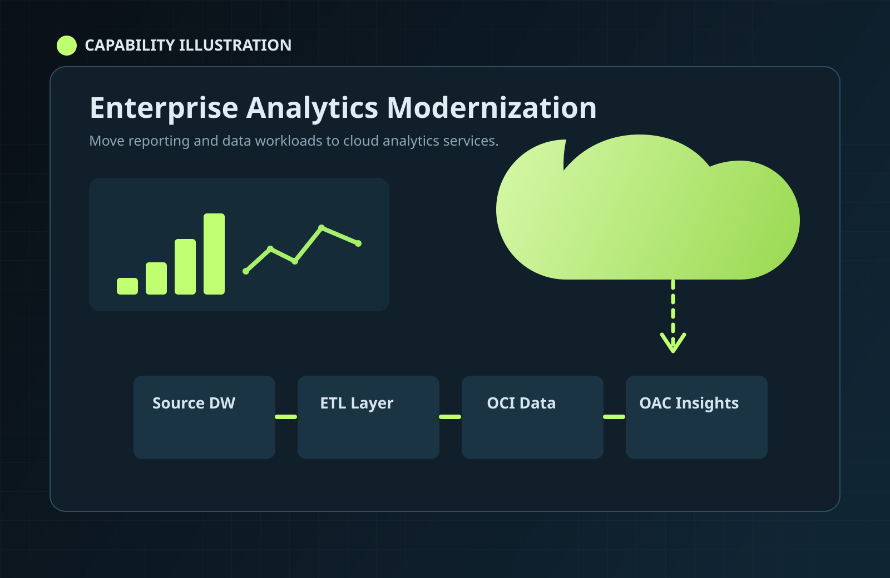
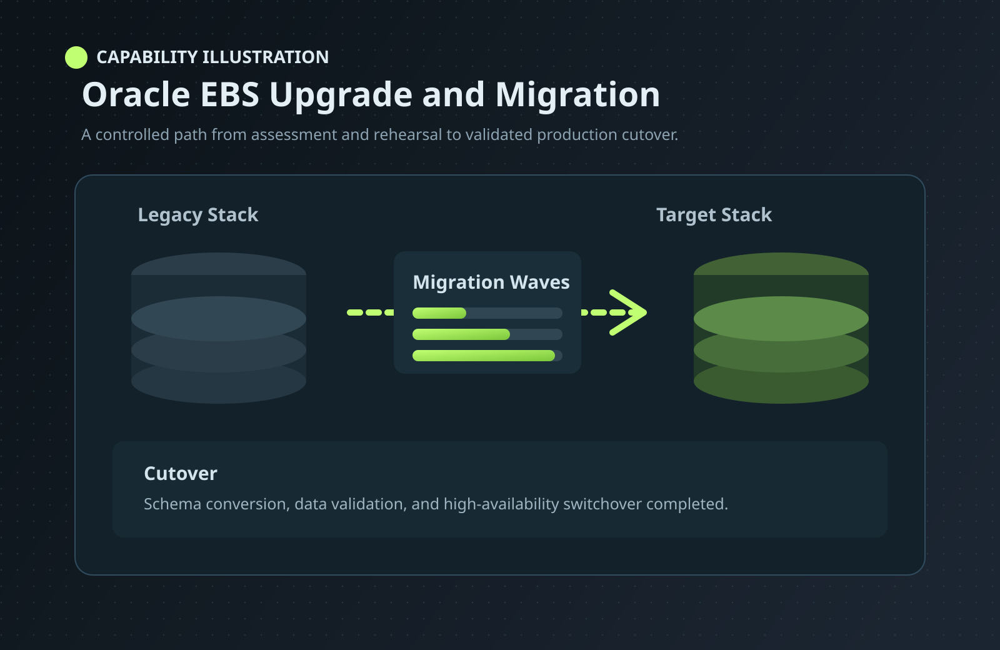
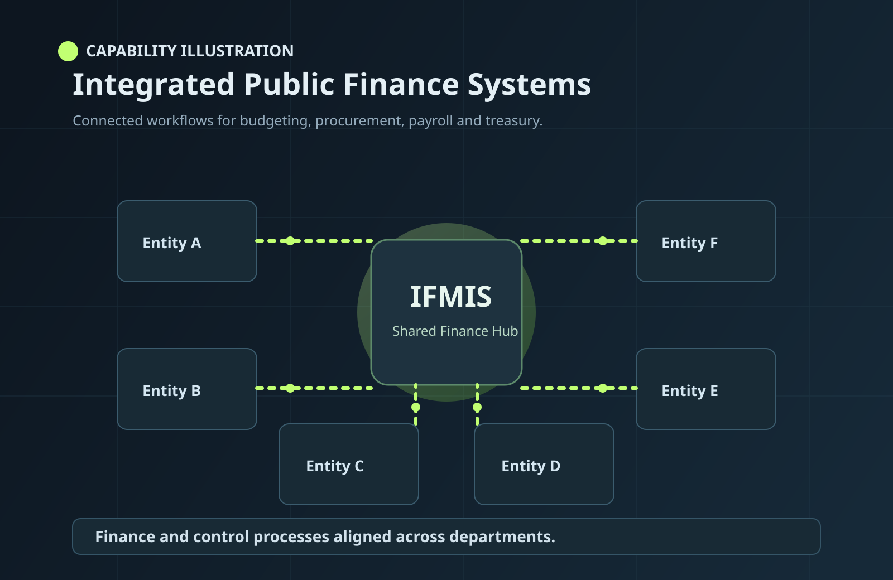
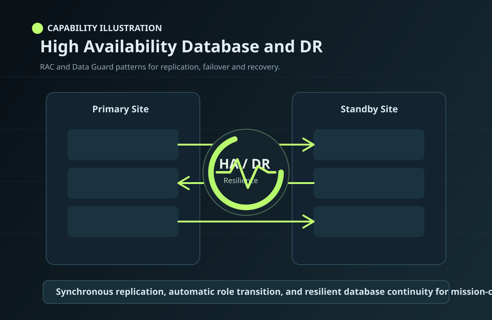
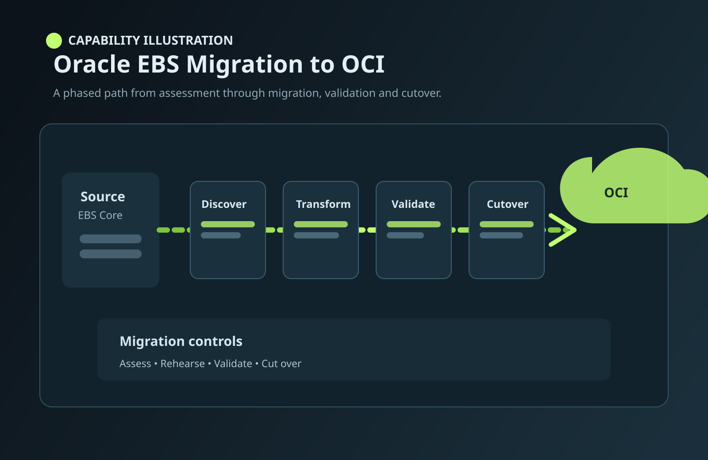

ERP & Finance
Public-Sector Financial Systems
Oracle ERP workflows for budgeting, procurement, treasury and reporting, shaped around governance and audit needs.
Explore this capabilityRepresentative solution patterns
These illustrations describe capability areas, not named client case studies.
ERP & Finance
Oracle ERP workflows for budgeting, procurement, treasury and reporting, shaped around governance and audit needs.
Explore this capability
Analytics & Cloud
Modernize data, reporting and analytics workloads through a controlled move from on-premises platforms to cloud services.
Explore this capability
Upgrade & Migration
Plan and deliver Oracle E-Business Suite upgrades alongside database modernization and production cutover.
Explore this capability
ERP Implementation
Connect finance, procurement, payroll and treasury processes through a governed enterprise platform.
Explore this capability
Database Reliability
Design database environments for resilience, recoverability and dependable operation of critical workloads.
Explore this capability
Cloud Migration
Move Oracle E-Business Suite and supporting databases to Oracle Cloud Infrastructure with a managed migration plan.
Explore this capabilityTell us about your environment and priorities. We’ll discuss a sensible scope and delivery path.